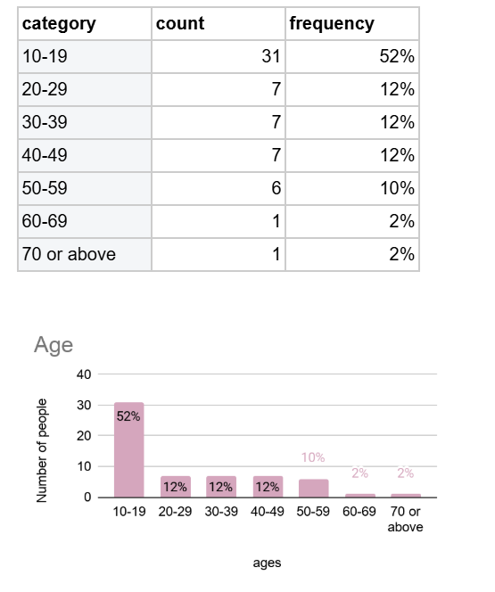

Nadine
Nadine
Data

Results: Sample Overview
Our group asked 60 people to answer our survey question.
-Age DistributionI chose a Bar chart for this data because it has seven categories and I want to show a comparison between each group of ages.
Survay data
 Q1:On a scale of 1-5, how much do you know about animal adoption? (with 1 being a little and 5
being a lot)
Q1:On a scale of 1-5, how much do you know about animal adoption? (with 1 being a little and 5
being a lot)
The exact question we asked was the same as what we wrote down. The purpose of getting that information
is to use it to prove that not a lot of people know about animal adoption and encourage animal adoption
to be taught in schools.
This is a single-choice question, and it collects categorical data.
We chose bar chart for this data because it has 5 categories and we want to show a comparison between
each scale number.
There are 31.66% of people choose scale 2, 3.33% of people choose scale 5. It's almost a three times gap
between them.
 Q2:On a scale of 1-5, how much do you care about animal adoption? (with 1 being a little and 5
being a lot)
Q2:On a scale of 1-5, how much do you care about animal adoption? (with 1 being a little and 5
being a lot)
The purpose of getting that information
is that people care about animal adoption rates, so it might be a reason to make policymakers also care
about it.
This is a single-choice question, and it collects categorical data.
We chose bar chart for this data because it has 5 categories and we want to show a comparison between
each scale number.
There are 30% of people choose scale 3 and 4, 8.33% of people choose scale 1. This is quite a big gap
between 30% and 8.33%.

We ask this question to prove that people do think policymakers should do something to increase animal
adoption rates.
This is a single-choice question, and it collects categorical data.
We chose a Pie chart for this data because it has 2 categories and we want to show the total breakdown
of
YES and NO.
There are 93.3% of people chose Yes, 6.7% of people chose No. This is a huge gap
between the two options.
animal adoption rates?(Multiple selections possible)

We want to know what the public think policymakers should do to increase the adoption rates. And we
expect that people choose “put animal adoption issues to the curriculum”
This is a multiple selection question, and it collects categorical data.
We chose a Bar chart for this data because it has 7 categories and we want to show a comparison between
each option.
There are 20.1% of people chose “hold more face-to-face activities for animals and adopters”, 8.99% of
people chose “hire more shelter workers” and “put animal adoption issues to the curriculum”.
We were surprised that not many people think policymakers
should put animal adoption issues to the curriculum.
 Q5:Do you think animal adoption issues should be taught in school?
Q5:Do you think animal adoption issues should be taught in school?
We want to prove that people think animal adoption issues should be fought in school, and the data tell
us it is what happens.
This is a single-choice question, and it collects categorical data.
We chose a Pie chart for this data because it has 2 categories and we want to show the total breakdown
of YES and NO.
There are 96.7% of people chose Yes, 3.3% of people chose No. It is definitely a huge gap between these
two options.